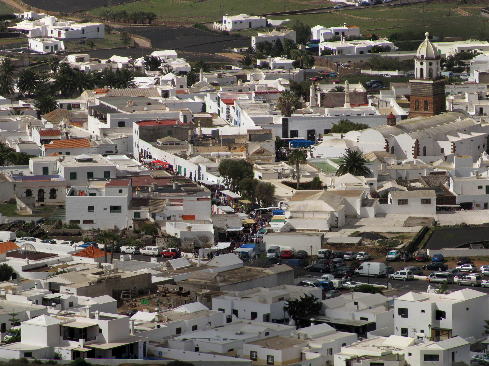
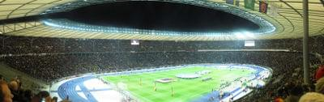
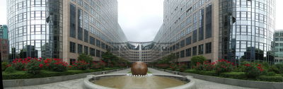
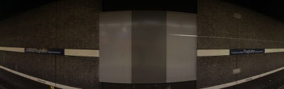
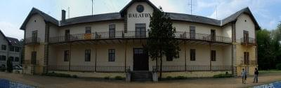

cities
panoramas showing what mankind has built
home
personal
my g4pc
radio
friends
research
travel stories
2001 Thailand
2001 Australien
2003 USA
2003 Neuseeland
2003 Indonesien
2003 Thailand
2004 Japan
2005 USA
2005 Panama
2006 Ukraine
2007 Tansania
2007 Tansania 2
2015 Costa Rica
panoramas
large sizes
360 degree
perspective
skyscraper
cities
the world
friends
links
Trigger
back to top
NEU



